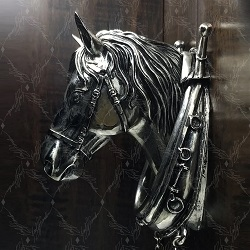
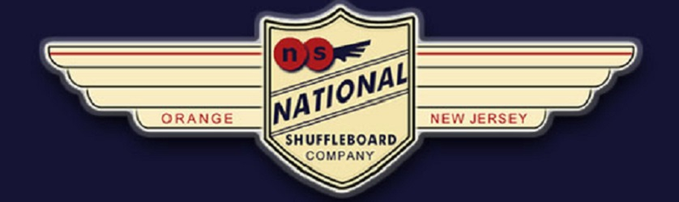

Horse Collar Game Play
Horse Collar shuffleboard games are played one-on-one or with two
or more teams of two players. In this game, team partners shoot
from the same end of the board, while in a one-on-one match they
shoot opposite of each other. Each player or team uses one set of
colored pucks (four for teams of two, eight for one-on-one) to make
their attempts at scoring. Depending on the number of players,
teams may need to alternate ends as the frames change.
Objective
Frames continue on until one player or team has scored the magic
number of 51 points. This score doesn’t necessarily win you the game,
as the winner must have the last shot in their hand (“the hammer”) in
order to claim victory for him or herself. Every player or team gets
to finish each frame and the highest score is the winner. During gameplay,
no players are allowed to leave their position to check a weight to
see what their partner or opponent has thrown.
How To Throw Shuffleboard Pucks In Horse Collar
With the object being to score the most points, the concept of throwing
shuffleboard pucks in Horse Collar is somewhat simple. It’s just getting
your pucks to go where you want that is complicated. Before a player or
team can score any points at all, at least one puck must be a three-pointer
or more. From there the scoring breaks down slightly different that the
typical shuffleboard game.
How To Keep Score In Horse Collar
Any pucks past the designated foul line are eligible to be counted when
scoring in Horse Collar as long as there is one puck in the three-point
section. The traditional scoring for most shuffleboards game is in play
when it comes to pucks that land within the one-point, two-point and
three-point section. However, “hangers,” or pucks that hang over the
edge of the board in three-point territory, are worth more points.
In the Game of Horse Collar...
Hanging pucks in the middle of the board are worth 13 points, while
pucks residing on the corners are worth 26. As mentioned previously,
once a player has scored 51 points, and only once they have